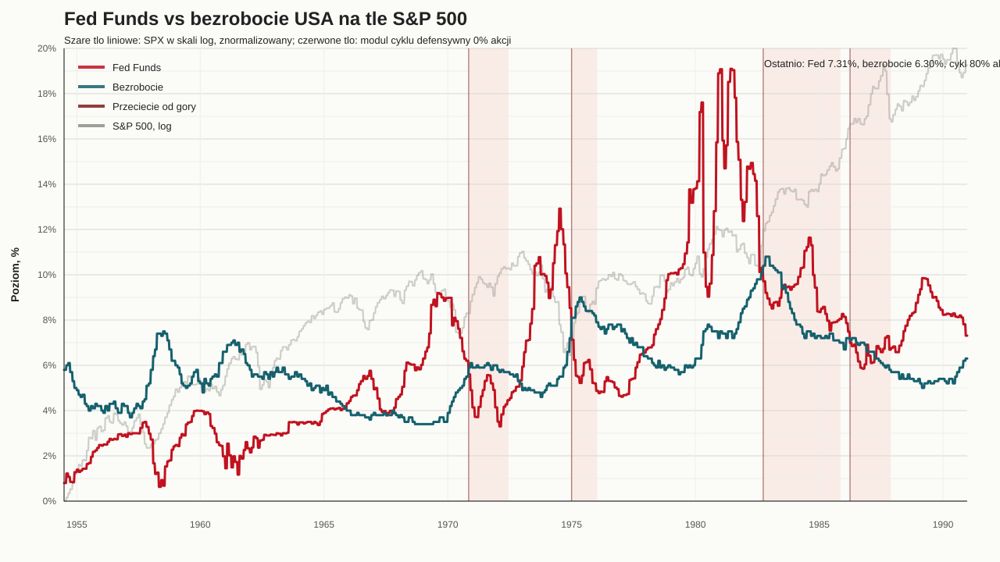
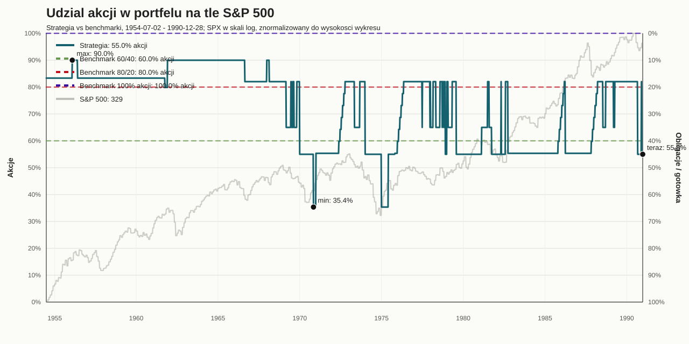
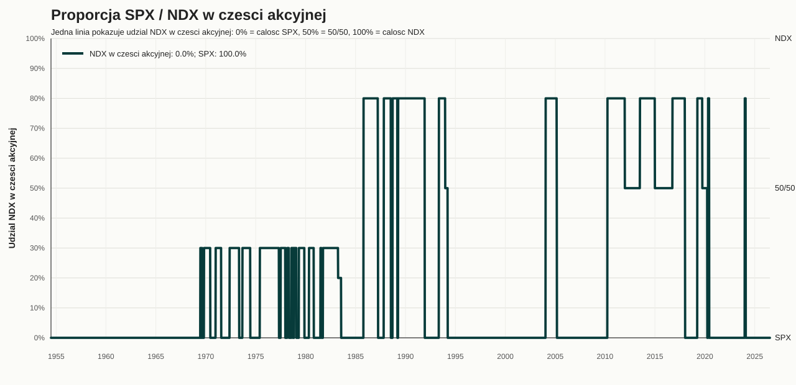
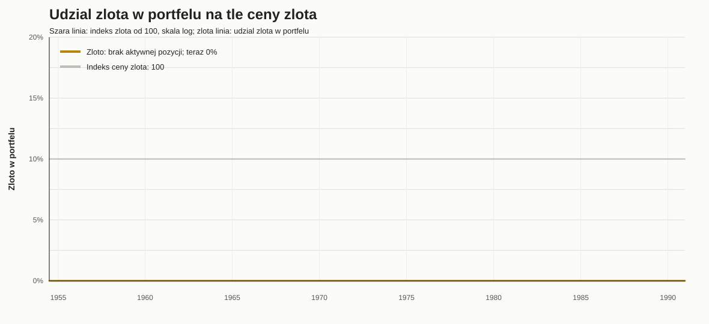
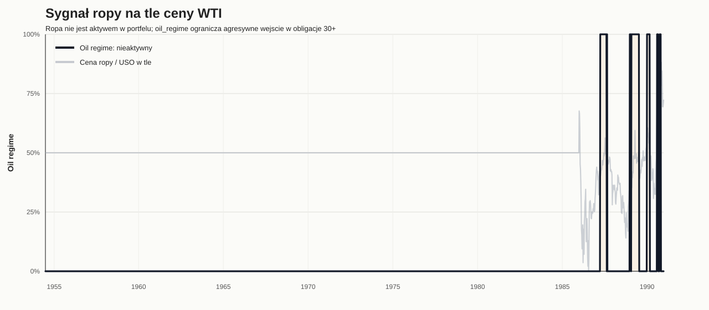
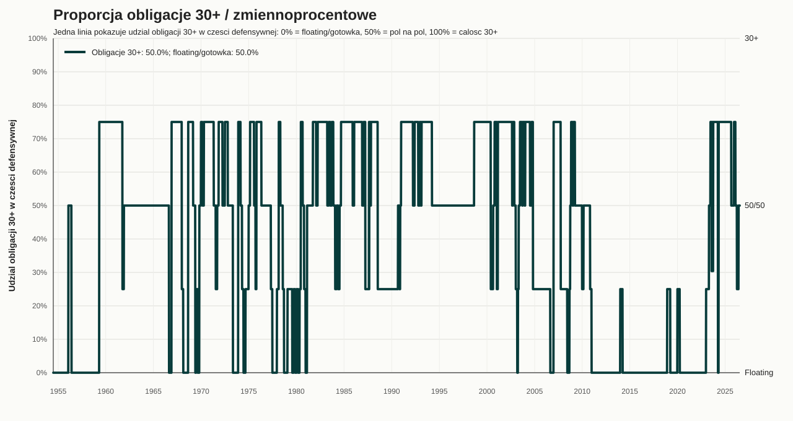
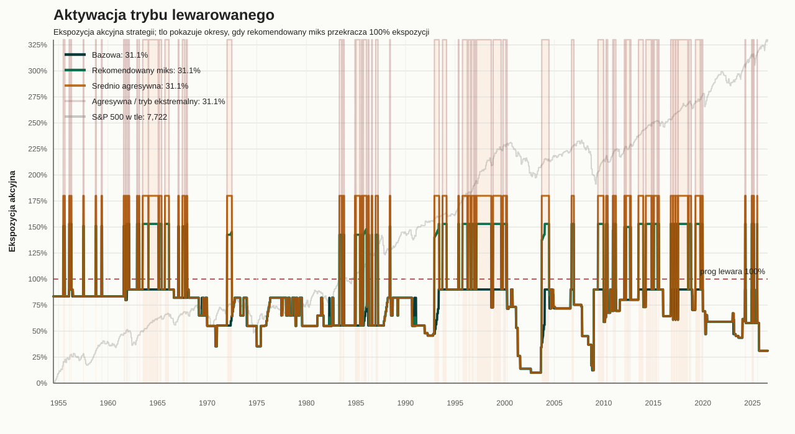
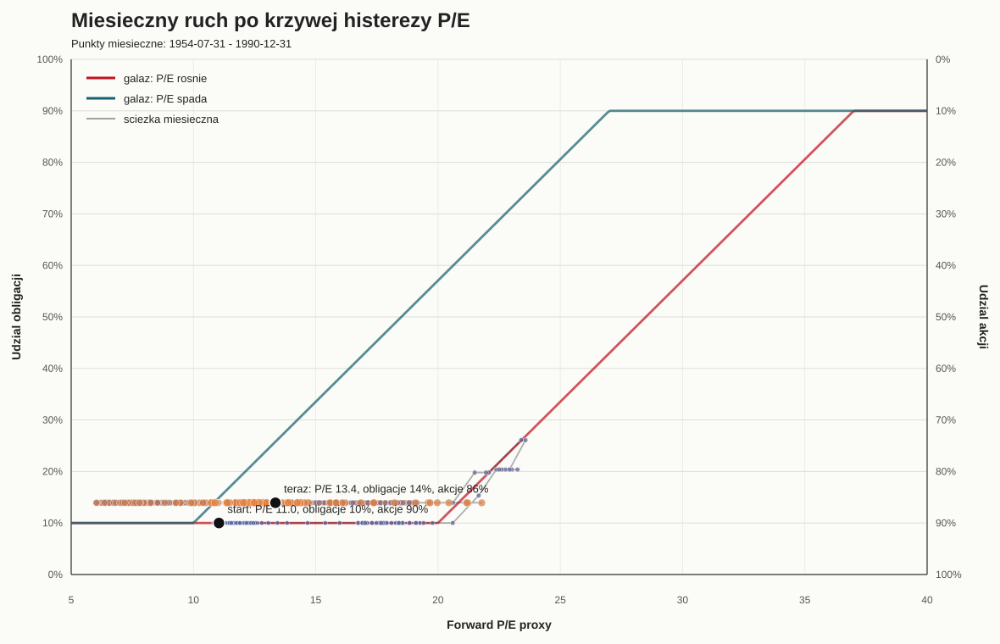

Backtest strategii
Uporzadkowany podglad wynikow, wykresow i tabel z backtestu od poczatku dostepnych danych do dzisiaj. Okres przed 1985 korzysta z proxy i ma nizsza jakosc danych niz nowszy fragment.
Podsumowania
- Glowne podsumowanie Czytelna podstrona z wnioskami, metrykami, aktualna alokacja i linkami do raportow.
- Opis strategii Pelny opis zasad: Shiller, cykl makro, P/E, SPX/NDX i zloto.
Wykresy
- Kapital i drawdown Wzrost inwestycji 100 USD oraz obsuniecia strategii, rekomendowanego miksu i benchmarkow w skali liniowej.
- Kapital i drawdown log Wzrost inwestycji 100 USD w skali logarytmicznej oraz drawdown.
- Alokacja akcji Udzial akcji w strategii kontra 100%, 80/20 i 60/40, z SPX w tle.
- Fed Funds vs bezrobocie Glowny sygnal defensywny cyklu makro, z SPX w tle.
- Histereza P/E Sciezka modulu Forward P/E po rownoleglych liniach histerezy.
- SPX vs NDX Jedna linia 0-100%: udzial NDX w czesci akcyjnej, gdzie reszta to SPX.
- Zloto Udzial zlota w portfelu na tle indeksu ceny zlota.
- Ropa Sygnał ropy na tle ceny WTI; filtr ogranicza obligacje 30+, ale nie kupuje ropy.
- Obligacje vs makro Jedna linia 0-100%: udzial obligacji 30+ w czesci defensywnej, gdzie reszta to floating/gotowka.
- Tryb lewarowany Ekspozycja akcyjna wariantow strategii oraz okresy aktywacji lewara na tle S&P 500.
{kind=link}
{kind=link}
{kind=link}
{kind=link}
{kind=link}
{kind=link}
{kind=link}
{kind=link}
{kind=link}
{kind=link}
Tabele i transakcje
- Roczna alokacja Srednie roczne proporcje strategii bazowej oraz ekspozycja akcyjna rekomendowanego miksu i wariantow agresywnych.
- Heatmapa roczna Roczne stopy zwrotu i roczne max drawdown dla strategii, rekomendowanego miksu, wariantow agresywnych i benchmarkow.
- Porownanie dekadowe CAGR, zwrot laczny, max drawdown, zmiennosc i Sharpe dla kazdej dekady, razem z rekomendowanym miksem.
- Czas na stracie Jak dlugo strategia, rekomendowany miks, warianty agresywne i benchmarki byly ponizej poprzedniego szczytu kapitalu.
- Miksy wariantow Porownanie stalych proporcji strategii bazowej, srednio agresywnej i agresywnej; rekomendowany miks to 30/70/0.
- Wiarygodnosc lewara Porownanie obecnego modelu tygodniowego z dzienna symulacja resetu ETF 2x/3x, kosztow finansowania i kosztow produktu.
- Transakcje modelowe Tabela historycznych zmian wag i transakcji wynikajacych z rebalancingu strategii.
- Przejscia obligacji Daty przejsc miedzy obligacjami 30+ i zmiennoprocentowymi/gotowka.
- Pelny panel CSV Tygodniowe dane, sygnaly, wagi, stopy zwrotu i benchmarki.
- Metryki CSV CAGR, zmiennosc, Sharpe, max drawdown i koncowa wartosc.
Fed Funds vs bezrobocie na tle S&P 500
Pokazuje momenty przecięcia stop i bezrobocia od gory, czyli mocny sygnal wyjscia z akcji.

Udzial akcji w portfelu na tle S&P 500
Porownuje zmienny udzial akcji w strategii ze stalymi benchmarkami 100%, 80/20 i 60/40.

Proporcja SPX vs NDX w czesci akcyjnej
Jedna linia pokazuje udzial NDX w czesci akcyjnej: 0% oznacza sam SPX, 50% oznacza 50/50, 100% oznacza sam NDX.

Udzial zlota w portfelu
Pokazuje okresy aktywnego zlota i indeks ceny zlota w tle.

Sygnał ropy
Ropa jest uzywana jako filtr makro: przy aktywnym oil_regime strategia ogranicza agresywne wejscie w obligacje 30+ i preferuje floating/gotowke.

Proporcja obligacji 30+ vs zmiennoprocentowe
Jedna linia pokazuje udzial obligacji 30+ w czesci defensywnej: 0% oznacza floating/gotowke, 50% oznacza 50/50, 100% oznacza same 30+.

Aktywacja trybu lewarowanego
Pokazuje ekspozycje akcyjna strategii bazowej, rekomendowanego miksu oraz wariantow agresywnych. Tlo oznacza okresy, gdy rekomendowany miks przekracza 100% ekspozycji.

Kapital od 100 USD i drawdown
Pokazuje domyslny wariant strategii oraz benchmarki.
Kapital od 100 USD i drawdown - skala log
Ten sam widok dla wybranej strategii oraz benchmarkow, ale z kapitalem w skali logarytmicznej.
Histereza P/E
Pokazuje, jak modul Forward P/E porusza sie po petli histerezy i zmienia udzial akcji.
